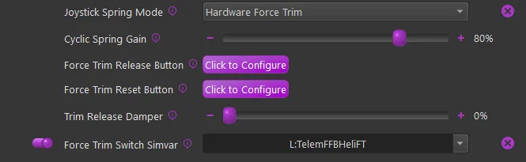
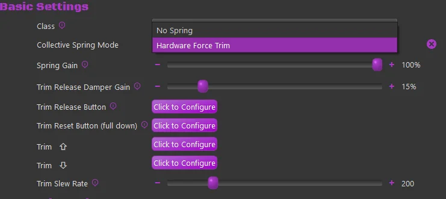
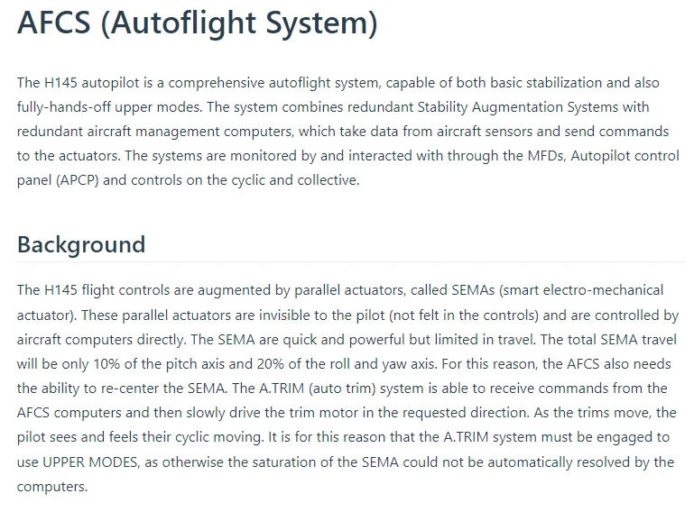
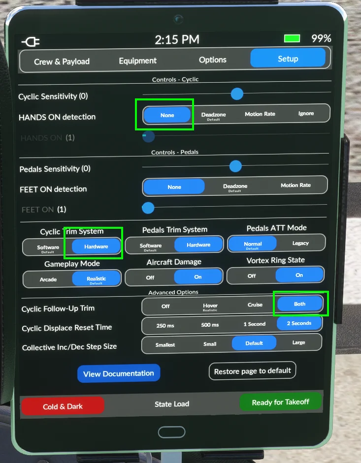
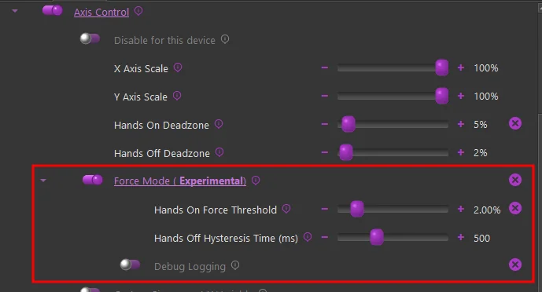
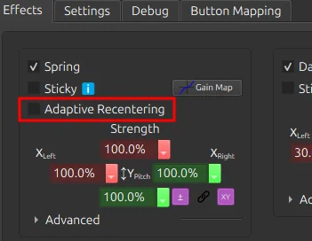
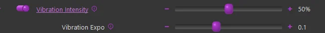

1. Helicopters¶
TelemFFB emulates helicopter force trim for both MSFS and X-Plane, and provides dedicated integrations for the Hype Performance Group (HPG) and FlyInside helicopters in MSFS.
1.1 Helicopter Force Trim¶
Helicopter force trim emulation is supported for both MSFS and X-Plane. To enable this feature of TelemFFB, enable the Force Trim checkbox and then in the sub-settings, configure a button on your joystick to serve as the trim release button.
Note
If you enable force trim, but do not set a button, you will see an error indication for the simulator. The Trim Release button is mandatory, the Trim Reset button is optional.

-
Cyclic Spring Gain
- Sets the spring gain force when FT is engaged
-
Force Trim Release Button
- Configures the button to be used as trim release
-
Force Trim Reset Button
- (Optional) - Configure a button to reset the trim to center
-
Trim Release Damper
-
Enables a dampening effect when the FT button is pressed and held.
-
This is slightly different than a “dampening” effect. It uses a constant center-updating spring effect to apply the dampening force
-
-
Force Trim Switch Simvar
-
When enabled, TelemFFB will watch the configured L:Var and enable/disable the hardware force trim based on the 0/1 state of said variable.
-
Some aircraft (like the Taog’s Hangar UH-1) have a switch in the cockpit. The default profile for this aircraft already has the correct L:Var mapped.
-
You can use 3rd party software such as SPAD.neXt to use a hardware switch to toggle
L:TelemFFBHeliFTfor any aircraft. This will simulate having a FT enable/disable switch
-
1.2 Cyclic Trim Following¶
Trim following works for helicopter cyclics too, in a much simpler form than the fixed-wing implementation. The same Trim Following setting and the same physical/virtual gains apply, but the data source and behavior differ:
- What it reads. Fixed-wing trim following reads the aileron and elevator trim positions. The helicopter cyclic path reads the rotor trim instead: in MSFS, the
ROTOR LATERAL TRIM PCTandROTOR LONGITUDINAL TRIM PCTSimVars; in X-Plane, the same roll and pitch trim datarefs the fixed-wing path uses. - What it does. The trim values shift the cyclic’s spring center — on top of wherever the force trim has placed it — scaled by the physical gains, and the virtual gains decide what fraction of that movement is passed to the simulator, exactly as for fixed wing.
- What it lacks. There is no calibrated trim curve for helicopters — the flat gains are the whole model, and the Automatic Trim Calibration tool does not apply.
Trim-following updates pause while the force-trim release button is held (the force trim owns the cyclic center while you re-trim by hand), and on aircraft with a modeled cockpit force-trim switch, switching it off zeroes the trim offsets.
1.3 Collective Spring Mode¶
If you fly with a VPforce-powered collective, the Collective Spring Mode setting (Basic Settings, collective device) selects how the collective behaves. The implementation is deliberately simple — two modes:

-
No Spring — no spring effect is applied. The collective moves freely, held only by whatever friction/damper forces your VPforce Configurator profile provides.
-
Hardware Force Trim — a spring holds the collective at its trimmed position, emulating the friction-lock/force-trim behavior of a real collective:
- Hold the trim release button to move the collective: the spring drops to a configurable damper level and the center follows your hand. Release the button and the collective locks at the new position.
- The optional trim reset button returns the trim to the full-down position.
- The optional trim up / trim down buttons step the trimmed position at a configurable rate without touching the collective.
- The spring hold strength and the release damper level are configurable.
Important
In Hardware Force Trim mode, the trim release button is mandatory — without one, the collective could never be moved against the locked spring, so TelemFFB raises an error until a button is configured.
Note
Aircraft that model a cockpit force-trim switch can drive the hold via the force trim switch variable: while the switch is off, the spring follows the collective without locking.
1.4 HPG Airbus Helicopters (MSFS only)¶
In collaboration with HPG, this implementation in TelemFFB was developed as a true-to-life representation of piloting the Airbus H145 and H160 aircraft.
The VPforce Rhino will work with the AFCS and act as the auto trim motor does, slowly moving the joystick as required to keep the SEMAs within their range of travel. The Rhino is also integrated with the force trim release system and the “hands on” spring override detection system. Force trim for hand-flying is also supported.
Both the Cyclic and Collective axes (if you have a VPforce powered collective) are integrated with the AFCS. The Tail Rotor axis is also supported.
Excerpt from the HPG H145 user guide:

As part of this implementation, there are certain requirements and recommended settings in the MSFS control bindings, the HPG Helicopter settings (iPad) and in TelemFFB.
Note
Because of the unique aspects of this implementation, when either the H145 or H160 profiles are loaded, a series of aircraft specific L:Vars are subscribed to (via Telemetry Overrides shipped in the default profiles). These L:Vars are part of the default profiles for the H145 and H160 aircraft. As such, it is important that if you load a livery that does not match the default profiles, that you clone from the existing default profile. If you simply create a new entry of type “HPGHelicopter”, it will not work properly.
VPForce Configurator Settings:
- You must ensure that there is enough spring force enabled in the profile to properly center the joystick
-
Joystick:
-
If the joystick sags away from center due to grip weight or low spring force:
- use the ‘balance springs’ feature to counteract the grip weight
- use the ‘adaptive centering’ feature to assist bringing the stick to center position when you are not holding it. 3. Collective & Pedals:
-
In order to properly emulate AFCS control, spring force MUST be enabled on both the collective and the pedals
-
TelemFFB Settings:
-
Axis Control must be enabled.
- This is required for both the Cyclic axes and the Collective axis (if you are using a VPforce powered Collective)
- You must UNBIND the axes in MSFS
-
Force Trim must be enabled
- you must also set your force trim binding in the force trim sub-configuration in TelemFFB
-
Cyclic
- Hands-On Deadzone
- Hands-Off Deadzone
-
Collective
-
Collective AP Spring Gain
- Collective Dampening Gain
MSFS Settings:
- You must UNBIND your Cyclic axes in MSFS to prevent conflicts with TelemFFB sending the axis position
-
If using a VPforce powered Collective,
- You must UNBIND your Collective axis in MSFS to prevent conflicts with TelemFFB sending the axis position
- You must BIND a button on your collective to act as collective trim release. Pressing the trim release is required to manipulate the real helicopters collective and that is modeled in TelemFFB. The binding in MSFS is
AUTOTHROTTLE DISCONNECT
HPG H160/H145 Settings:
Depending on the version of the helicopter you have installed, the tablet options may differ. Use the tablet settings below depending on what your tablet options look like.
Older Versions:
In the tablet settings inside the aircraft, the following must be configured for proper behavior:
-
Cyclic:
- Cyclic Control set to ‘No Springs’
-
Follow-Up trim set to ‘OFF’ (you may need to temporarily enable Centering Springs to set this)
-
SAS Stability level
- For the H160: between -80 and -60
- For the H145: between -50 and -20
- Collective
-
SAS Stability level -100
Newer Versions:
Newer versions of the HPG helicopters have more options that assist with FFB implementations. You will want to set:
- Hands on Detection: ‘None’
- Cyclic Trim System: ‘Hardware’
- Cyclic Followup Trim: ‘Both’

1.4.1 Force Mode (Experimental)¶
New in version 2.0, along with the latest v1.0.18 Rhino firmware is an experimental version of the hands on/off detection that is used in the HPG Class aircraft.

The latest firmware allows us to track the force output for the axis in % of max, which can give a much more granular indication of user hands-on controls as compared to a pure deflection based calculation.
Because the configurator Adaptive Recentering feature “forces” the stick as close to the exact center as possible, having it enabled typically results in a higher “standing force” reading. Because of this, it is recommended to disable the Adaptive Recentering figure in configurator when flying the HPG helicopters in Force Mode

Rather than a hard hands-off threshold, it uses a time based hysteresis. This prevents flapping of hands on/off when passing through the center point.
-
Hands On Force Threshold:
- Recommended value of %3 or less
- This value is indicative of the total force that would be achieved with full deflection of the stick.
-
Hands Off Hysteresis Time:
- Recommended value - 500ms
- The time, in milliseconds that, after hands-on has been triggered, that the force must be below the force threshold in order to trigger hands-off
-
Debug Logging:
- Logs the hands on/off state on every simulation frame. Useful when fine tuning the threshold value
1.5 FlyInside Helicopters (MSFS only)¶
In collaboration with FlyInside, TelemFFB uses vibration variables from the flight model. ETL, VRS, and other buffeting and engine vibrations are not used. Instead there is a Vibration control under Mechanical/Airframe:
